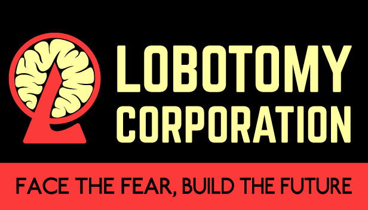

Lobotomy Corporation
Lobotomy Corporation is een management-simulatiespel waarin je een geheim bedrijf runt dat gevaarlijke Abnormalities (wezens van onbekende oorsprong) beheert. Het doel is om deze entiteiten onder controle te houden, hun energie te oogsten en tegelijkertijd de veiligheid van je personeel te waarborgen. In deze gids leer je hoe je succesvol je bedrijf runt en omgaat met de chaos die zich voordoet.
1. Basisprincipes van Lobotomy Corporation
Het doel van Lobotomy Corporation is het beheren van Abnormalities en het oogsten van hun energie, terwijl je bedrijf veilig blijft. Hier zijn de belangrijkste aspecten van het spel:
- Beheer van Abnormalities: Elke Abnormality heeft unieke eigenschappen en gedragingen. Je moet ervoor zorgen dat ze in hun kooien blijven en dat hun energie op een efficiënte manier wordt verzameld.
- Werknemers: Je hebt werknemers nodig om te werken met Abnormalities. Zorg ervoor dat je personeel goed getraind is en de juiste emoties onder controle heeft om ongelukken te voorkomen.
- Werkomstandigheden: Verschillende Abnormalities kunnen bepaalde omstandigheden vereisen om veilig te worden benaderd. Dit kan variëren van het type personeel dat je nodig hebt tot specifieke gereedschappen en trainingen.
2. Het beheren van Abnormalities
Abnormalities zijn de kern van je bedrijf en elke entiteit vereist een andere aanpak:
- Observeer hun gedrag: Elke Abnormality heeft unieke gedragingen. Sommige kunnen agressief worden als ze verkeerd worden behandeld, terwijl andere gewoon wachten om te worden geobserveerd.
- Verzamel hun energie: Je moet Abnormalities succesvol behandelen om hun energie te oogsten. Dit kan door ze te ondervragen, te observeren of andere activiteiten die hun energie genereren.
- Beheers risico's: Soms kunnen Abnormalities ontsnappen of een incident veroorzaken. Zorg ervoor dat je veiligheidssystemen zoals kooien, alarmsystemen en bewaakprocedures op orde hebt.
3. Werknemers en training
Werknemers zijn essentieel voor het beheersen van Abnormalities. Ze hebben verschillende statistieken en emoties die hun effectiviteit beïnvloeden:
- Statistieken: Werknemers hebben verschillende statistieken zoals 'Fortitude' (voor fysieke sterkte) en 'Insight' (voor intellectuele taken). Train je werknemers om specifieke vaardigheden te ontwikkelen voor het omgaan met bepaalde Abnormalities.
- Emoties en risico's: Werknemers kunnen emotioneel worden beïnvloed door de Abnormalities waarmee ze werken. Zorg ervoor dat ze goed worden begeleid om ongewenste uitbarstingen te voorkomen.
- Specialisatie: Sommige werknemers zijn beter geschikt voor bepaalde taken, zoals het werken met specifieke soorten Abnormalities. Gebruik deze specialisaties om je efficiëntie te verhogen.
4. Risicomanagement
Het beheersen van risico's is cruciaal in Lobotomy Corporation. Hier zijn enkele tips:
- Gebruik de juiste medewerkers: Sommige Abnormalities vereisen specifieke werknemers met bepaalde vaardigheden. Zorg ervoor dat je personeel goed is uitgerust voor hun taken.
- Wees voorbereid op incidenten: Zelfs de meest gecontroleerde situaties kunnen misgaan. Zorg ervoor dat je veiligheidssystemen klaar zijn om incidenten op te vangen.
- Houd de moraal hoog: Werknemers kunnen angstig of gestrest raken door Abnormalities. Zorg voor ontspanning en support om hun emoties onder controle te houden.
5. Energiebeheer en voortgang
Het verzamelen van energie is je primaire doel, maar dit moet zorgvuldig worden beheerd:
- Beperk risico’s voor energie: Terwijl je energie verzamelt, kunnen incidenten je energieproductie onderbreken. Zorg ervoor dat je genoeg personeel hebt om de controle te houden.
- Verhoog je productiecapaciteit: Door het upgraden van je faciliteiten kun je de hoeveelheid energie die je verzamelt verhogen. Zorg ervoor dat je de juiste balans vindt tussen risico en productie.
- Gebruik energie efficiënt: Spendeer de verzamelde energie aan upgrades, training en nieuwe apparatuur om je bedrijf te laten groeien.
6. Incidenten en chaosbeheer
Incidents kunnen zich snel voordoen, dus het is belangrijk om voorbereid te zijn:
- Identificeer gevaarlijke Abnormalities: Sommige Abnormalities zijn veel gevaarlijker dan andere. Leer hun gedrag en bereid je voor op mogelijk gevaar.
- Calm down processen: Wanneer werknemers in paniek raken, is het belangrijk om kalmerende maatregelen te nemen om chaos te voorkomen.
- Voorkom ontsnappingen: Abnormalities kunnen ontsnappen uit hun kooien als ze niet goed worden beheerd. Controleer regelmatig de veiligheidssystemen en train je personeel om snel te reageren.
7. Tips voor succes
Om succesvol te zijn in Lobotomy Corporation, moet je strategieën plannen en goed reactievermogen hebben:
- Focus op training: Zorg ervoor dat je werknemers goed getraind zijn voor hun taken. Dit maakt een enorm verschil in de effectiviteit van je werk.
- Monitor Abnormalities regelmatig: Het gedrag van Abnormalities kan onvoorspelbaar zijn. Houd ze goed in de gaten om gevaar te vermijden.
- Leer van incidenten: Fouten kunnen niet altijd worden vermeden. Gebruik ze als leermomenten om toekomstige incidenten te voorkomen.
Conclusie
Lobotomy Corporation is een complex en uitdagend managementspel dat veel strategisch denken vereist. Het combineren van risico- en resourcebeheer met personeelsbeheer en het omgaan met Abnormalities biedt een unieke ervaring. Succesvolle uitvoering van je strategie en het goed beheren van je bedrijf zal je helpen om de Abnormalities effectief te controleren en te overleven in deze gevaarlijke wereld. Veel succes, en vergeet niet: controle en voorbereiding zijn de sleutel tot succes!